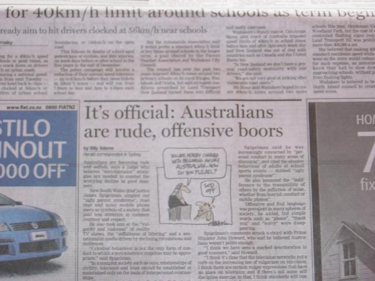
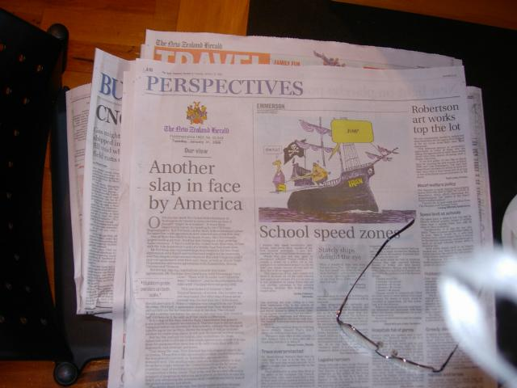

Text Bites
"It doesn't matter what you believe, it matters what people think you believe" - Conversation overheard in Rotorua restaraunt. The recipient of this remark, alarmingly, owned a car dealership and $1M in rental property. Showing typical Kiwi reticence, he waited half an hour before working that tidbit into the conversation.
"When, like Keys, you're a big swinging dick of international monetary policy..." - New Zealand Herald business section. Me: "I've got a big swinging dick. Why aren't I in the newspaper?" Tattoo artist: "Ring 'em!" Me: "I did. They won't publish my mobile number."
"A Pay of Plenty fishing charter oat operator has been accused of ramming a rival he claimed was fishing in his traditional tribal grounds...Mr. Pollock said Mr. McClutchie fled when the passenger whose fish it was put a curse on him." New Zealand Herald, page A7.
"It shouldn't matter." - Laundry shop lady in Rotarua when I returned a handkerchief she'd added to my haul.
"Don't take it too seriously. It's just there to keep people from parking too long." Visitor center lady in Matamata explaning why I could leave the car in a 60 minute parking space to arrive back from the Hobbiton tour 3 1/2 hours later.
"I've never known a country, with the possible exception of the United States, that is not concerned with maintaining its national identity." Columnist in New Zealand Herald. Yes! Lifelong complaint of mine!
"Nice tatu!" Maori lady at BP station admiring my new ink. Thanks, lady.
"They're associated with having a good time, which has no place here." Rural school board explaining its decision to ban jeans.
"Tam came to New zealand from China in the late 1980s and worked as a market gardener in Otaki. He married in 1990 and was known to beat and rape his wife--who retaliated by drugging and attacking him with a meat cleaver. Tam's head was split by 10 life-threatening blows and his wife was charged with attempted murder. She was one of the first women in New zealand courts to be acquitted through the defence of battered woman's syndrome" New Zealand Herald recounting the life of an assasinated Triad enforcer
Defensive Posturing
The guide book says there's a national inferiority complex, and to be prepared to be asked what you think of the country before you leave the airport. That didn't happen, but even as a tourist I got the sense that New zealand wonders, if it were to disappear, how long it would be before anyone notices, and if anyone would care. Especially if Peter Jackson were abroad at the time.
In the newspaper there are frequent despairing comparisons to Australia--our standard of living is slipping behind Australia! If this dip is the beginning of a recession, we'll loose population to Australia! (The New Zealand dollar doubled in value over the last few years, it is way too high.)
Tattoo artist:
"Canberra's boring, innit?"
Me: "Not really, I do kickboxing, go to a meditation group"
Him: "I mean the architecture."
Me: "Right. It's an architectural zero."
At end of session: "There...won't get that in Australia, will you?"
Still another: Outraged letter to editor (about failure to raise the minimum wage) "Time to Move to Oz".

New Zealand Herald
Mentioned this article to a hotel clerk who said, "They really are, you know".
I guess there's a sense that New Zealand is lagging. One area where they actually are is broadband. Only 10% have it, and it's 256K download speed. Intel is complaining it can't sell its full range of products, Symantec is complaining it has to ship CDs because people can't download Ghost, and Microsoft has "put the government on notice", in a minister's words, to do something. Telcom has maintained exclusive use of its copper (not fiber, you'll note), through politics, and charges defeatingly high prices.
Aussies |
Kiwis (my image) | Kiwis
(self image) |
| Athletic | Plump | Stuffy-minded conformists |
| Brash, sarcastic, in-your-face | Quiet, witty, poised | Good with sports and mechanical stuff (motorcycles!) |
| New York | London | No clear sense of what New Zealand signifies. Proud of ANZAC, but not an emotional touchstone like in Australia. |
| Boon companion | Perfect gentleman | Australia is the life of the party with the lampshade on its head, while New Zealand is too mannerly to do anything but sit and seethe. |
Free Speech
Australia made religious hate speech a crime. Now Moslems have successfully sued a Christian preacher for defaming the Moslem religion--by quoting passages from the Koran and Hadith, if you please. Passages they'd rather not have quoted. Now the preacher is banned from speaking on this topic. The law was used for the reverse of the purpose for which it was enacted. The side effect, though, has been to make the preacher into a martyr and gain him publicity he never otherwise would have gotten. This taught me that once you start regulating speech, things get...complex.
We Love You Too

The US released a long list of countries with which it hopes to achieve a free-trade treaty this year. New Zealand was not on the list. The US ambassador here called around to publicize that it was not. This has to do with New Zealand's refusal to allow US nuclear armed (or even powered) ships to call, and its opposition to the Iraq war. The paper pointed out Australian experience shows that the smaller economy doesn't always make out well under free trade, and that the spat had gotten a bit silly on both sides.
It was a temperate, realistic assessment. Lacking was the US hysterical, moralistic tone that we're the Dutch Boy with the finger in the dike of terrorism and tyranny, and anyone who doesn't help is a cowardly ingrate who is sponging (blodging) off our heroism and sacrifice, and risking the future of us all.
Here's what I'm talking about. Similar sentiments on the OzBlog earned me this from a friend of 25 years' standing.
This is the greatest country in the history of mankind and if you do not believe
this, then you should move
to Australia permanently... However, it would seem that you are representative
of those people
that would actually like to see the society we live in die and fall apart and
mirror something else... a
socialist Australia? We live in dangerous times with a dangerous enemy still
actively trying to destroy the very life I am trying to create for my family
and loved ones... hanging out with you now almost feels as though I am hanging
out with an extension of that very enemy.
I guess he means Australia.